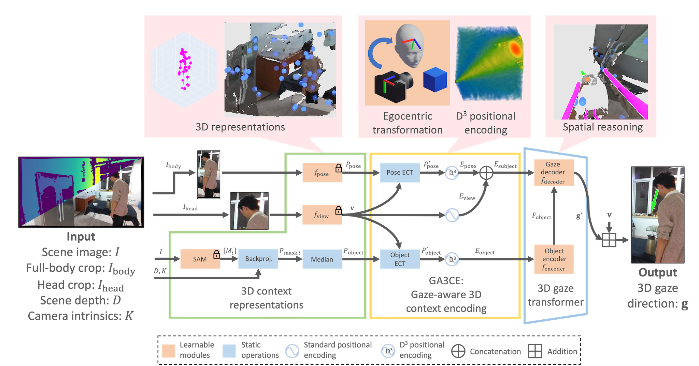

We estimate 3D gaze in egocentric space based on explicit 3D understanding.
We propose a novel 3D gaze estimation approach that learns spatial relationships between the subject and objects in the scene, and outputs 3D gaze direction. Our method targets unconstrained settings, including cases where close-up views of the subject's eyes are unavailable, such as when the subject is distant or facing away. Previous approaches typically rely on either 2D appearance alone or incorporate limited spatial cues using depth maps in the non-learnable post-processing step. Estimating 3D gaze direction from 2D observations in these scenarios is challenging; variations in subject pose, scene layout, and gaze direction, combined with differing camera poses, yield diverse 2D appearances and 3D gaze directions even when targeting the same 3D scene. To address this issue, we propose GA3CE: Gaze-Aware 3D Context Encoding. Our method represents subject and scene using 3D poses and object positions, treating them as 3D context to learn spatial relationships in 3D space. Inspired by human vision, we align this context in an egocentric space, significantly reducing spatial complexity. Furthermore, we propose D$^3$ (direction-distance-decomposed) positional encoding to better capture the spatial relationship between 3D context and gaze direction in direction and distance space. Experiments demonstrate substantial improvements, reducing mean angle error by 13%–37% compared to leading baselines on benchmark datasets in single-frame settings.

@inproceedings{kawana2025ga3ce,
title = {GA3CE: Unconstrained 3D Gaze Estimation with Gaze-Aware 3D Context Encoding},
author = {Kawana, Yuki and Shiba, Shintaro and Kong, Quan and Kobori, Norimasa},
booktitle = {Proceedings of the IEEE/CVF Conference on Computer Vision and Pattern Recognition (CVPR)},
year = {2025}
}